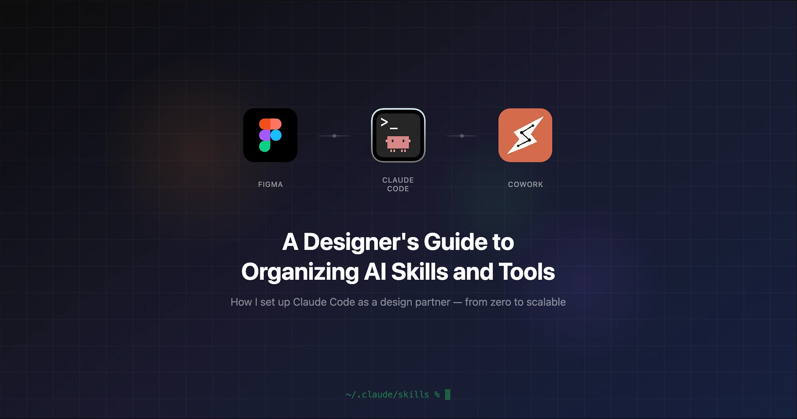

CasePro: rebuilding matter creation around what a client says, not what a form demands.
Intake and matter creation used to be one overloaded form. Now they are two connected systems, one AI-assisted and one manual.
- Role
- Product Designer, System Redesign
- Domain
- Legal Practice Management · CRM
- Core problem
- Intake Merged Into Matter
- Outcome
- 2 Linked Modules, 2 Creation Paths

One merged intake-as-matter object became two linked entities: intake and matter.
Create with AI Agent, or Create Manually, chosen up front.
Both paths use the same six-step architecture and the same review gate.
01Overview · What is CasePro
A legal CRM where intake and matter stopped being the same object
CasePro is the practice-management layer law firms use to run a case from the first client call to close: matters, parties, incident facts, documents, deadlines, and legal-team staffing, all in one system.
Designed around two different jobs, instead of one form. Before this redesign, opening a new case meant filling out a single "New Matter" wizard that mixed a client's raw intake story with case metadata, incident facts, legal-team assignment, and outcome tracking, six tabs deep, with the client's intake reduced to a free-text box labeled Notes or links to intake form.
Rebuilt as two linked systems, instead of one mega-form. Intake became its own structured, firm-customizable questionnaire. Matter creation became a deliberate second step that could pull from that intake or start from a blank slate when a firm chose to build the record by hand.
- Category
- Legal Tech SaaS · CRM
- Role
- Product Designer
- Scope
- Workflow Redesign, IA, Interaction Design
- Users
- Intake Specialists, Paralegals, Attorneys, Firm Admins
- Status
- Design → Engineering Handoff
02The problem
Each "New Matter" started the same way: guessing what the client already told someone
The legacy matter form, still visible below, treated intake as an afterthought and treated every case (a two-car accident, a medical malpractice claim, a commercial dispute) as one identical, generic slog.
Intake was a text box
- The only place client-provided information lived inside a new matter was one freeform field: Notes or links to intake form.
- Nothing structured, nothing reusable, nothing a downstream workflow could act on.
- Each fact a client had already shared still had to be re-typed by hand, field by field.
One form, every practice area
- The same generic fields applied whether the matter was an auto accident, a slip-and-fall, or a commercial dispute.
- Firms couldn't tailor intake questions to their own region, county, or practice group.
- Questions that mattered for one case type showed up as clutter on every other case type.
Nothing carried forward
- If a client had already answered questions during intake, none of it flowed into the matter.
- Paralegals re-typed names, dates, and incident details a second time, by hand, from scratch.
- There was no signal for who filled in a field, or how confident anyone was that it was correct.


03Research & diagnosis · Root cause
The bug was the data model underneath the form
I sat with the people who processed new matters every day: intake specialists, paralegals building files after client calls, and the ops lead who owned the CRM configuration. Instead of starting from a blank redesign, I traced the existing form field by field: which ones duplicated "intake" and "matter," which ones nobody filled in, and which decisions (statute-of-limitations deadlines, legal-team staffing) had no system support and lived in someone's memory.
Three signals confirmed this was a real cost
A redesign is easy to justify with a strong opinion and one bad screenshot. Before proposing anything, I wanted three independent signals to agree, beyond my own read of the form.
Shadowing beyond interviews
- Sat through live matter creation with intake specialists and paralegals over two weeks, across several new matters end to end.
- Timed where they paused, backtracked to a client's notes, or pulled in a colleague to ask "wait, did we already ask this?"
Reading the CRM's own data
- Pulled a sample of recently created matters and checked which fields were populated versus left blank or default.
- The Intake Questionnaire field was empty, or just a name with no real content, on most of them, so almost nobody opened the structured intake tab downstream.
Structured interviews, reframed
- Separate 1:1s with the ops lead and two attorneys. I skipped "what's wrong with the form" and asked "walk me through the last matter you opened."
- That framing surfaced friction people had stopped noticing, because they'd built quiet workarounds for it.
All three pointed at the same root cause from three different angles. The form was laid out fine. It answered two different questions, what did the client tell us and what is the legal record, as if they were one, and everyone touching it had adapted around that instead of naming it.
That trace surfaced the bug. It was a data-model problem, and more validation rules wouldn't have fixed it.
The reframeIntake and Matter are different things. Intake is what a client tells you, once, in their own words. A Matter is the legal record your firm builds from it, and firms need to build that record two different ways, depending on how much of the client's story is already captured.
The redesign in one flow: one merged object became two linked entities
- 01
Client call
The client tells the firm what happened.
- 02
"New Matter" wizard
Intake = one freeform note, buried in step 1 of 6.
Nothing structured carries forward - 03
Re-typed by hand
Paralegals re-enter names, dates, and incident details into six more tabs.
Same story typed twice
- 01
Client call
Captured by a voice agent, a web form, or a paralegal.
- 02
Intake record
Customizable per firm, region, and county.
Structured and reusable - 03
Matter record
The legal case file, linked to its intake.
Pulls from intake, never re-typed - 04 · choose
Path A · Create with AI
Best when intake exists.
Path B · Create manually
Best without intake data.
04Solutions considered · Options on the table
Three ways to fix it. Two were faster to ship, and wrong
Once the root cause was clear, the fix still wasn't obvious. I brought three real options to stakeholders instead of one polished recommendation, because the fastest option and the AI-forward option were both tempting and would have shipped the same bug under a nicer coat of paint.
Polish the existing form
- Reorganize the same fields into cleaner steps, add validation, keep intake as a field inside Matter.
- Fastest to ship: no data-model change, no migration.
Rejected: a better-looking version of the same bug. Intake still couldn't be customized per firm, still couldn't be reused, still only existed inside a matter that already had to be created first.
One button, fully automatic
- A single "Generate Matter" action that always builds the record from whatever intake data exists. No manual path at all.
- The most "AI-forward" pitch, and the one stakeholders liked first.
Rejected: assumes every matter starts from a complete intake. Many don't: walk-in clients, a five-minute phone note. Forcing AI-only creation onto those cases meant either blocking the user or letting the model fill gaps in a legal record with no human in the loop.
Separate intake, let the user choose
- Intake becomes its own customizable entity, linked to a matter instead of buried inside one.
- Matter creation forks: AI-assisted where intake data supports it, manual where it doesn't.
Chosen: the only option that fixed the data-model root cause and matched how matters start: sometimes with a client's full story already captured, sometimes with almost nothing.
05Design thesis · Two principles
Two decisions that reshaped the entire system
Intake and Matter are separate, linked entities
Intake became its own object, with its own lifecycle, instead of a field inside a matter. That unlocked something the old model couldn't do: a firm can now define its own intake questions, such as the accident-type list for a state that regulates it differently, the statute-of-limitations triggers specific to a county, or the extra fields a personal-injury practice needs and a commercial-litigation practice doesn't. No engineer has to touch the matter schema, and no firm gets forced onto one generic questionnaire.
To reduce the time it takes a client's story to become usable data, I designed intake capture to be AI-assisted at the source: a voice agent can answer or join a client's call, transcribe it, and populate the structured intake fields, so a paralegal doesn't type rough notes into a blank box afterward and hope nothing was missed. Whether a field comes from that call, a web form the client filled in, or a paralegal's manual entry, it becomes a candidate the matter can pull from later.
Matter creation needs two paths, not one assumption
Not every matter starts with a complete intake. Some arrive from a thorough client call with every field captured; others start from a five-minute phone note or a walk-in client with almost nothing on file yet. A single "AI-generate the matter" button that assumes perfect intake data forces the user to bet on every case, whether or not the data supports it. So matter creation became a deliberate fork: let the person creating the matter tell the system how much is already known, and route them accordingly.
An "AI-generate the matter" button that assumes perfect intake data forces the user to bet on every case.
06Matter creation · The entry point
Each new matter starts with one question: how much do we already know?
Instead of hiding the AI-vs-manual decision inside a settings toggle or defaulting to one mode, the first screen after "Create New Matter" asks it, presented as two equally legitimate paths with their tradeoffs stated up front instead of discovered halfway through the flow.
Create with AI Agent
- Pulls available intake information.
- Organizes it into the right matter sections.
- Saves time and reduces manual re-entry.
- Still stops for review and edits before anything is created.
Create Manually
- Full control over every field, from a blank slate.
- The same guided six-step workflow as the AI path.
- Add details at the user's own pace, save a draft anytime.
- Still reviewed in full before the matter is created.
07Path A · Create with AI
The AI path never hides how confident it is
The risk with any "let AI build it for you" flow is that it overpromises or leaves the user unable to tell what came from real data and what came from a guess. I built the AI path to make that distinction visible at every step, from the moment it starts reading the intake record to the final review screen before a matter is created.
- 01
Understand intake
Scores how usable the linked intake record is.
17 ready · 2 review · 4 missing - 02
Prepare draft
Narrates each extraction step in the background.
Visible, cancellable progress - 03
Review & edit
Each field labels its source.
From Intake · AI Matched · AI Suggested - 04
Ask the assistant
Fills gaps where the reviewer is already working.
Actions, not just answers - 05
Review before create
The same review gate as the manual path.
Nothing skips this check
Understanding the intake, before touching the matter
Before drafting anything, the agent scores how usable the linked intake record is: how many fields are ready to use as-is, how many need a human glance, and how many are missing. The user sees that score instead of it sitting in a log.

Preparing the draft, with visible, cancellable progress
The agent narrates its own work step by step (finding the intake questionnaire, reading client information, identifying parties, extracting incident details, checking legal information) and says it's running in the background, so the user never stares at a spinner or babysits the screen.

A prefilled matter that labels its own sources
This detail makes the whole path trustworthy: each field in the drafted matter carries a provenance tag (From Intake, AI Matched, or AI Suggested), so a reviewer knows at a glance whether a value is a verified fact, a confident inference, or a guess that deserves a second look before the matter goes live.

An assistant to close the remaining gaps
Instead of sending the user back to the intake readiness score to work out what's missing, an in-context assistant offers next actions (review and suggest changes, fill missing information, generate a case summary, or find similar past matters) where the reviewer is already working.

Nothing is created without a full review
Regardless of how confident the draft is, the last step of the AI path is identical to the manual path: every section, grouped and labeled, with an explicit Ready to Create Matter confirmation before the record is written. AI assistance ends where the legal record begins.

08Path B · Create manually
Manual creation is not a fallback path. It's the same system, minus the head start
A common failure mode in "AI-assisted" products is treating the non-AI path as a second-class, unmaintained fallback. Here, both paths share the same six-step information architecture (Matter Overview, Parties Involved, Incident Details, Legal & Insurance, Team Assignment, Images & Outcome), so a user's mental model holds no matter which button they click first.
- 01
Matter Overview
- 02
Parties Involved
- 03
Incident Details
- 04
Legal & Insurance
- 05
Team Assignment
- 06
Images & Outcome


09Shared design system · Craft details
Six small decisions that hold the whole system together
None of these are headline features on their own. Together, they separate a redesign that looks clean in a screenshot from one a paralegal trusts on a real case.
Field-level provenance
Each AI-touched field is tagged From Intake, AI Matched, or AI Suggested instead of appearing in one undifferentiated "auto-filled" block.
Confidence-based readiness
Intake completeness is scored per category before the AI path even starts drafting, so the user chooses a path with real information, not a guess.
Grouped cards over flat forms
Both paths replace the legacy's undifferentiated field list with labeled sections (Core Details, Classification & Tracking), so a long form still reads as a set of decisions.
Smart autofill & legal calculations
Selecting an incident address auto-fills city, state, and zip; the statute-of-limitations deadline auto-calculates from the incident state and date, with a manual override always available.
Round-robin staffing
Team-assignment roles surface the firm's own round-robin logic as a suggestion, so staffing a matter isn't starting from twelve empty dropdowns.
One review gate, no exceptions
Both paths converge on the identical grouped review screen before "Create Matter". AI assistance speeds up the draft and never skips the confirmation.
10Results & impact
Back to the paralegal retyping the same story into six tabs
That's where this case study started: someone doing careful work on a client call, then watching almost none of it survive into the matter they had to build next. This is what changed for each of them.
Intake specialists
The notes they capture on the client call are no longer a side note someone else re-types later; they are the record the matter is built from, structured to their firm's own questions from the start.
Paralegals
No more reconciling "what the client said" against "what the matter form wants." Either they confirm an AI-drafted record field by field with visible provenance, or they fill in one clean guided form. They never do both and never do it twice.
Attorneys & firm admins
A matter arrives at the same reviewable, grouped record no matter which button someone clicked to create it, so trust in the system doesn't depend on knowing which path was used. Firms can also reshape their own intake questions without opening an engineering ticket.
What changed structurally
The redesign replaced one merged intake-as-matter object with two linked entities, intake and matter, connected by two entry paths instead of a single default. Each field a paralegal sees now carries one of three provenance states (From Intake, AI Matched, AI Suggested), and both entry paths share the same six-step information architecture, so a matter built manually and one built with AI assistance end up structurally identical.
My role
I led this redesign end to end: the diagnostic work that traced the intake bug back to the data model instead of the form, the three architectural options I scoped and the case for rejecting two of them, the shared information architecture both creation paths now use, and the field-level provenance system that makes AI-assisted matters auditable. I defined the handoff spec, covering component states, provenance logic, and edge cases for partial or conflicting intake data, before engineering picked it up.
What I learned
The bug is rarely the screen
Every earlier attempt to fix the intake form failed for the same reason: the form was correct for the data model it was built on. The redesign only worked once the model changed first.
Confidence needs a visible source
"The AI got it right" isn't something a paralegal can verify at a glance. Provenance tags and readiness scores exist so trust is checkable, not assumed.
A fallback path erodes over time
Manual creation only stays usable if it's built and maintained as a first-class path. Treat it as a fallback and it drifts from whatever the "real" path does.
This hasn't shipped to users yet
Everything above reflects design review and the engineering handoff spec, not production usage. Whether paralegals trust the provenance tags on a live case remains untested.
The old form optimized for fewer clicks in a demo. Splitting intake from matter made a system firms could make their own.
The old form failed for the same reason most "combine two workflows into one screen" decisions fail: it optimized for fewer clicks in a demo instead of what a paralegal needs to trust on a real case. Splitting intake from matter meant more screens and, for the first time, a system firms could make their own.
 I designed an AI transcription and synthesis workspace that anchors client conversations to litigation discovery files.
I designed an AI transcription and synthesis workspace that anchors client conversations to litigation discovery files.

Designing an autonomous staging review engine that detects UI regressions, verifies accessibility, and delivers developer-ready PR reports in Slack.